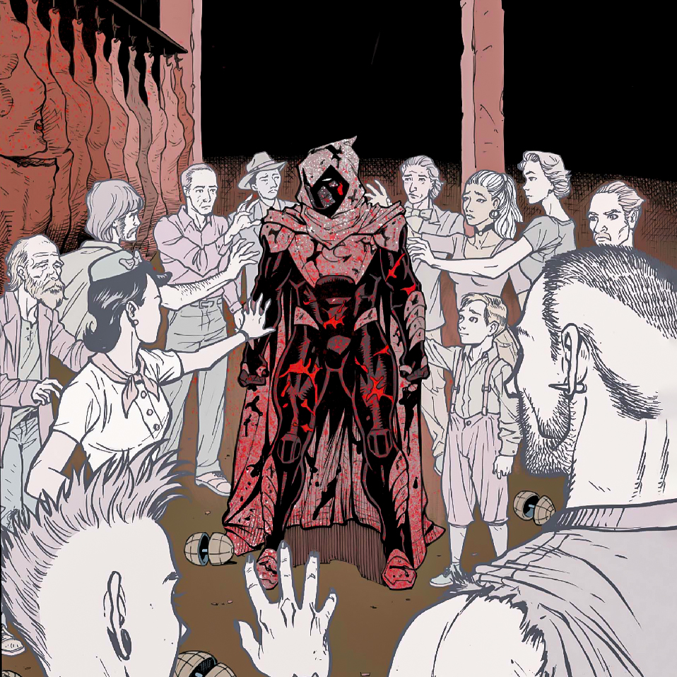

Nascido em Chicago, Illinois, Marc Spector é o filho de um rabino americano. Ao atingir a maturidade, Marc ganhou a vida como boxeador, fuzileiro naval e mercenário. Em uma de suas muitas missões, ele trabalhou em conjunto com o mercenário africano Raoul Bushman, a serviço do Dr. Peter Alraune. Nesta missão, eles procuravam o antigo templo do deus egípcio Khonshu (ou Konshu), o deus da Lua. Quando finalmente encontram a caverna, Bushman se revela um traidor, assassinando o Dr. Alraune e deixando Spector gravemente ferido, a beira da morte.
Encontrado por egípcios, ele é levado até o templo do próprio Khonshu para ser tratado. Quando o coração de Spector para, o deus egípcio aparece em uma visão e lhe oferece a chance de ser seu avatar na terra. Marc aceita e, decidido a se tornar um combatente do crime, ele derrota Bushman e, em seguida, volta para os E.U.A.